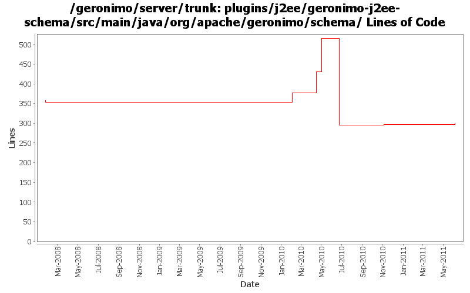

[root]/plugins/j2ee/geronimo-j2ee-schema/src/main/java/org/apache/geronimo/schema

| Author | Changes | Lines of Code | Lines per Change |
|---|---|---|---|
| Totals | 12 (100.0%) | 188 (100.0%) | 15.6 |
| xuhaihong | 2 (16.7%) | 115 (61.2%) | 57.5 |
| gawor | 5 (41.7%) | 61 (32.4%) | 12.2 |
| djencks | 2 (16.7%) | 7 (3.7%) | 3.5 |
| genspring | 2 (16.7%) | 4 (2.1%) | 2.0 |
| rwonly | 1 (8.3%) | 1 (0.5%) | 1.0 |
move schema conversion "openejb-jar" from SchemaConversoinUtils to jetty/tomcat builders.
1 lines of code changed in 1 file:
GERONIMO-5995 Provide a way to customize ejb in geornimo-web.xml, keep same the module structure to geronimo-application.xsd so that it's easier to extend in the future.
3 lines of code changed in 1 file:
GERONIMO-5672 Overriding an env-entry in geronimo-web.xml fails with a DeploymentException (Thanks Viola for the patch!)
1 lines of code changed in 1 file:
GERONIMO-5190 use openejb-jee jaxb tree for spec dds
2 lines of code changed in 1 file:
a. Calculate web permissions while starting the web module to support setServletSecurity feature in Servlet 3.0
b. Initial support ServletContainerInitializer, some improvements might be needed, such as use ASM ?
c. Support ORDERED_LIBS ServletContext attribute
84 lines of code changed in 1 file:
take 3: convert persistence version to 2.0
55 lines of code changed in 2 files:
GERONIMO-5057 Use those xmlbeans generated by JAVA EE 6 schema files
31 lines of code changed in 1 file:
GERONIMO-3149 Some gbeans to support jaspi components and a little bit of reorganization
5 lines of code changed in 1 file:
a fix for a fix (GERONIMO-3782)
6 lines of code changed in 1 file:
sometimes some elements were skipped during dtd->xsd translation causing validation errors (GERONIMO-3782)
0 lines of code changed in 2 files: